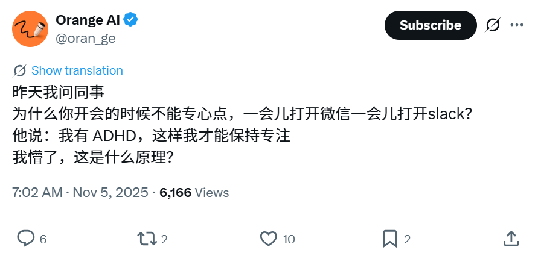

Minokakay
@Minokakay
RT @nopinduoduo: 或许是因为adhd的大脑接受信息的带宽非常强，需要多种信息刺激，
而开会-语言输出的信息量实在是有限。
ADHD有一个"猎人基因假说解释",adhder其实是古代猎人后代，其大脑天然适应的是野外的环境:… …

永传_yongchuan
@nopinduoduo
或许是因为adhd的大脑接受信息的带宽非常强，需要多种信息刺激，
而开会-语言输出的信息量实在是有限。
ADHD有一个"猎人基因假说解释",adhder其实是古代猎人后代，其大脑天然适应的是野外的环境: https://t.co/uEAJWziik2 https://t.co/NqTSGNOtFr